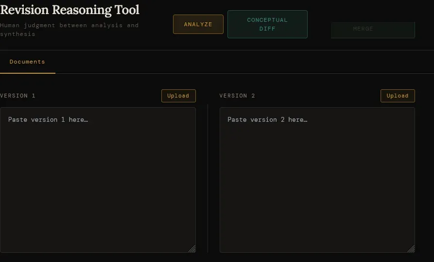
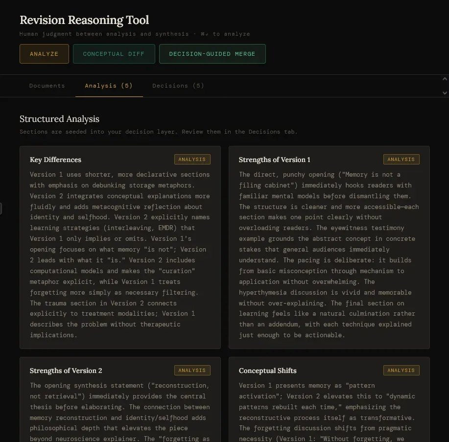

Back to AI-assisted tools and systems
Revision Reasoning Tool
A self-directed tool design project building a judgment layer between AI document analysis and synthesis, structuring human authorship decisions rather than replacing them.
Built with AI assistance. Part of the AI-assisted tools and systems section.
- Role
- Systems designer, tool architect
- Team
- Self-directed, built collaboratively with AI
- Timeline
- Ongoing development
- Tools
- Claude, GPT-4, Python (AI-generated code)

The problem I noticed
Most AI document tools operate as black boxes: feed in documents, get output. The human's judgment about which insights matter, and which don't, is either ignored or collapsed into a thumbs-up on the final result. Judgment happens too late, and leaves no record.
For professional work, this creates a specific problem: it becomes impossible to prove what a human actually decided versus what the AI decided for them.
The design decisions
The core architecture insight was recognizing that document comparison has four distinct phases that need to stay separated: Input, Interpretation, Decision, and Output. The tool inserts a structured judgment layer between Interpretation and Output, a step most tools skip entirely.
Every AI-generated insight is surfaced explicitly, and the user must mark it accepted, rejected, or unsure (with a required note) before any merge can proceed. The merge engine is then constrained by those decisions, not free to act on its own. This was a design decision, not a technical one.
The original AI implementation made a critical architectural mistake, direct client calls with regex parsing, that made the interpretation layer unpredictable. Replacing it with structured output contracts was the central intervention.
The system in action
The Revision Reasoning Tool surfaces AI-generated insights across multiple views, from an empty input state through structured analysis, conceptual diffs, and a judgment layer, so the user can evaluate, accept, reject, or flag each one before any merge proceeds.



What it does
- Users mark every AI insight as accept, reject, or unsure, and the merge cannot run until all unsure items carry a note
- The merge output is constrained by those decisions; the AI cannot override accepted or rejected choices
- A structured audit trail documents which decisions were fully applied, partially applied, or not applied, with explanations
- Input, Interpretation, Decision, and Output stay separate phases, so AI judgment can't bypass human review
- Defensive UX blocks the merge until all decisions are resolved, and the error message explains why, making it pedagogical rather than just obstructive
- Structured output contracts replace regex parsing, making the interpretation layer predictable and auditable
Architecture and key decisions
The clearest signal that this is design work, not just prompting: the original AI-generated code made a structural mistake I caught and named. It was making direct API calls and parsing responses with regex, which made behavior unpredictable and the outputs untrustworthy.
I identified the missing layer, specified the structured output contract, and defined the schema. The AI then wrote the corrected implementation to my spec. The acceptance criteria I wrote before any code existed: "a user reviewing 50 insights should be able to prove, after the fact, exactly which ones they approved and why." That's the product.
The rebuild made that contract visual. Dark near-black background, warm cream type, gold accents: not a SaaS dashboard, a writer's instrument. Tab-based navigation (Input, Analysis, Diff, Decisions, Merge) makes the four phases legible as a progression rather than a scroll. Each tab appears as content is generated, and the Decisions tab shows a live judgment counter.
Hardening decisions that matter: scoped styles so the component doesn't bleed into the host page, structured JSON retry so model misbehavior doesn't silently corrupt output, request guards to prevent duplicate calls, and token warnings before the context window fills. Export downloads a full session archive (decisions, notes, rationale, merged output) so the audit trail is portable.